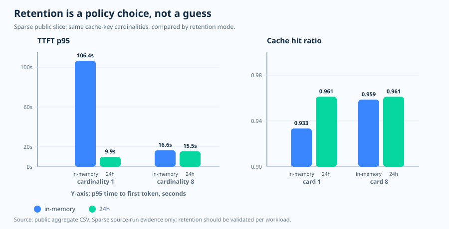

運用エッセイ · プロンプトキャッシュ保持期間
保持期間は前提ではなく、リクエストのポリシーである
対応モデルは対象となるプレフィックスを既定でキャッシュするため、プロンプト
キャッシュは自動的に効くように感じられます。しかし、保持期間は当然のものとして
前提にしてよいものではありません。後からの再利用に依存する運用なら、リクエスト
自身が prompt_cache_retention でそれを表明すべきです。
問い
後でキャッシュの再利用を見込んでいる運用において、リクエストは実際にその保持期間を要求しているか?
根拠
Microsoft Learn が保持モードを定義し、本リポジトリが断片的な公開レイテンシとヒット率の証跡を補足します。
判断
保持期間を明示し、プレフィックスを安定させ、レイテンシをキャッシュ済みトークンの比率と並べて読む。
公式の挙動 · 2 つの保持モード
自動キャッシュは、明示的な保持期間と同じではない
Microsoft Learn は 2 つのプロンプトキャッシュ保持ポリシー、
in_memory と 24h を説明しています。インメモリの
キャッシュエントリは、通常は非アクティブになってから 5〜10 分以内にクリア
され、最後の使用から 1 時間以内には必ず削除されます。拡張保持を使えば、
キャッシュ済みプレフィックスを最大 24 時間まで、より長くアクティブに保てます。
既定は短いことがある
gpt-5.4 以前のモデルでは、保持期間を省略すると in_memory を意味します。
長い再利用は明示する
後からの再利用を見込む運用なら、対応している箇所で prompt_cache_retention を 24h に設定します。
価格は判断材料にならない
Microsoft Learn は、プロンプトキャッシュの価格はどちらの保持ポリシーでも同じだと述べています。
観測された根拠 · 断片的な公開スライス
レイテンシが保持期間の選択を可視化した
in_memory と
24h を比較しています。

| 保持 | カーディナリティ | ヒット率 | TTFT p95 | 定常レコード数 |
|---|---|---|---|---|
| in-memory | 1 | 0.9334 | 106,389.96 ms | 388 |
| 24h | 1 | 0.9612 | 9,899.74 ms | 390 |
| in-memory | 8 | 0.9586 | 16,623.66 ms | 389 |
| 24h | 8 | 0.9612 | 15,549.08 ms | 389 |
これが示すこと、示さないこと
この公開スライスでは、カーディナリティ 1 のセルが最初のトークンの レイテンシにおいて保持期間を可視化しました。それはソース実行から得た 証跡であり、普遍的な規則ではありません。長く通用する教訓はもっと単純で、 保持モード・ヒット率・レイテンシをまとめて読む、ということです。
運用ポリシー · 曖昧さには安全側で倒す
保持期間が重要なら、その選択を観測可能にする
公開リポジトリには、文書化された既定が in_memory である
モデルに対して値の省略を拒否する、小さな保持ポリシーのヘルパーが含まれて
います。厳しく聞こえますが、これはよくある失敗パターンを防ぎます。設計は
より長いキャッシュ期間を前提にしているのに、リクエストボディは黙って短い
既定を採用してしまう、という事態です。
良い例
ワークロードが後からの再利用に依存するときの prompt_cache_retention="24h"。
これも良い例
ワークロードが短い再利用だけを必要とし、それを明示しているときの prompt_cache_retention="in_memory"。
危うい例
運用手順書はより長い期間を前提としているのに、値を未指定のまま放置すること。
ガバナンスに関する注記 · 保持期間はレイテンシだけの話ではない
長い保持期間にはガバナンスの確認も必要
Microsoft Learn は、インメモリのプロンプトキャッシュはすべてのデータ所在 リージョンと互換性があると述べています。拡張保持については、キャッシュ データがリージョン内にとどまるのは Regional Standard または Regional Provisioned モードの場合のみだとしています。これにより保持期間は、 パフォーマンス上の判断であると同時にガバナンス上の判断にもなります。
実務上の原則は、保持期間を既定値の中に埋もれさせないことです。意図した値を コードに明記し、キャッシュ済みトークンの比率とレイテンシを観測し、利用する サービングモードに対するデータ所在の要件を確認します。
出典と証跡の範囲
- 公式仕様、2026-06-04 アクセス: Microsoft Learn プロンプトキャッシュガイド。
- 公開された集計済みの根拠: キャッシュキーのバケッティング CSV。
- 公開運用ガイド: プロンプトキャッシュキーのポリシー手順書。
実務上の原則は次のとおりです。短い期間を過ぎてもキャッシュの再利用が重要なら、
prompt_cache_retention を明示し、観測されるレイテンシの形を検証する。